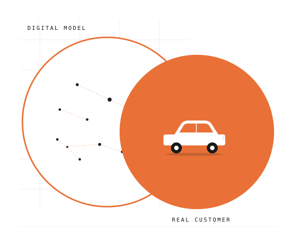
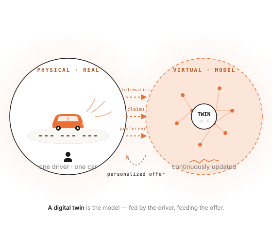
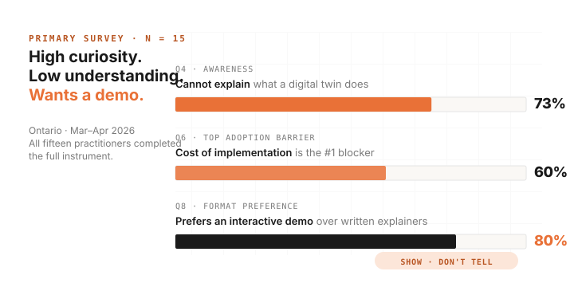

Digital twins in
auto insurance.
A research project for marketing professionals in Ontario auto insurance. Six artifacts — a primary survey, a long-read zine, an interactive simulator, a podcast, this site, and a LinkedIn campaign — built around one practical use case: personalizing policy offers through a digital twin of customer driving behaviour.

A digital twin is a virtual model of a real customer.
It ingests telematics, claims history, and stated preferences; simulates outcomes under different conditions; and feeds the result back into the pricing, coverage, and marketing message that customer actually sees. The model is continuously updated — the customer drives, the twin learns, the offer adjusts.

Acquire
Telematics, app behavior, claims history, demographic and policy data.
Model
A virtual replica of the driver, updated near real-time.
Simulate
Run "what-if" scenarios — premium changes, coverage shifts, risk events.
Personalize
Pricing, coverage and marketing messaging tailored per customer.
Measure
Engagement, retention, claim outcomes — fed back to refine the model.
Most marketing professionals can't yet explain what digital twins do.
Between March and April 2026, fifteen insurance marketing practitioners in Ontario completed a structured survey. The picture is consistent across all fifteen responses: high curiosity, low practical understanding, and a strong preference for hands-on demonstrations over written explainers.

Personalization is not a creative problem. It is an evidence problem. A digital twin is the place where the evidence accumulates and where the marketing message earns the right to be specific.
Six artifacts answer one question.
Each artifact handles one stage of the same pipeline: research → explain → demonstrate → interpret → assemble → distribute. Designed to be opened in any order, but read together they answer one question — can a multichannel campaign demonstrate the practical value of digital twins to a non-technical audience?
Survey & data dashboard
A two-layer dashboard. Layer 1 maps Ontario auto insurance industry trends 2022–2025 from secondary sources. Layer 2 reports the primary survey of 15 marketing practitioners — the empirical foundation for everything else.
Open dashboard ↗Digital zine (long-read)
A 14-page interactive long-read. Three short acts: what is this thing, how does it work for one driver, what stops it from happening. Includes an embedded comprehension check at the end.
Read the zine ↗Decision simulator
A Unity WebGL prototype: one personalization scenario, two outcomes. The "show, don't tell" artifact for the 80% of practitioners who asked for a demo. Three minutes from launch to first insight.
Launch simulator →Podcast episode
One ~20-minute episode that walks listeners from the survey finding through the simulator example to a single professional takeaway. For people who prefer to listen on a commute rather than read on a screen.
Listen →How the project fits together
This site. Integrates the other five artifacts and adds methodology, success criteria, real-world cases, and the full reading list. Built as plain HTML, hosted on GitHub Pages.
Read methodology →LinkedIn campaign
Five organic B2B posts rolling out across Weeks 7–9. Where the project meets its actual audience. Each post is anchored in one finding from this hub and links back here.
Visit LinkedIn page ↗Beyond the prototype
The simulator is a research prototype, not a product. To see what digital twin practice already looks like in industry — and to read the sources behind every claim on this site — open these.
What is already being done in industry
Telematics and UBI programs in Canada and the United States, plus mature digital twin implementations in adjacent industries — Siemens, Microsoft, GE, Tesla. Each entry: title, short description, what changed, sources.
Browse cases → Reading listTwenty-one sources behind the project
Nine peer-reviewed papers, five industry reports, two regulatory documents, five professional publications. Grouped by category and theme, with direct links and one-line annotations.
Open the library →Success criteria — measurable, public, calibrated.
Assignment 1 feedback flagged that the proposal stated effectiveness in conceptual terms, with no measurable thresholds. Each artifact is now held to four directional criteria. These are not statistical claims — they are the lines below which an artifact would be considered not working as intended.
Hub-level success (this site)
- Reach: ≥150 unique visitors in the first 14 days post-launch (LinkedIn-driven).
- Depth: ≥3 pages per session for visitors who do not bounce.
- Conversion to artifact: ≥35% of hub visitors click through to at least one artifact page.
- Time on page: median ≥1:30 on the home page; ≥2:30 on artifact pages.
Tracked via GA4 with consent gating. Per-artifact thresholds are listed on each artifact page and consolidated in the methodology.
Curious how a digital twin would price a real customer?
Open the dashboard, then the zine — five minutes total.